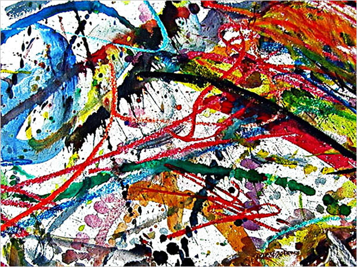
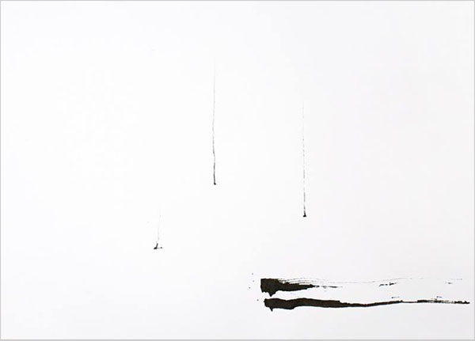
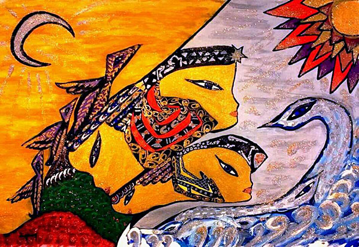
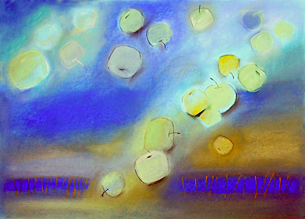
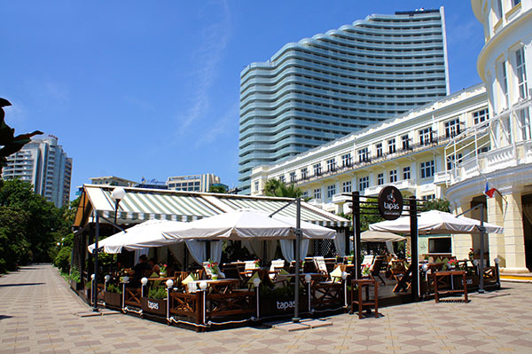
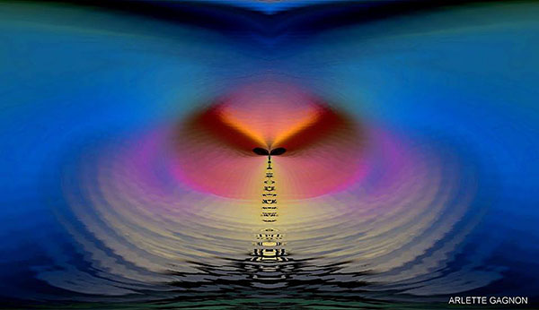
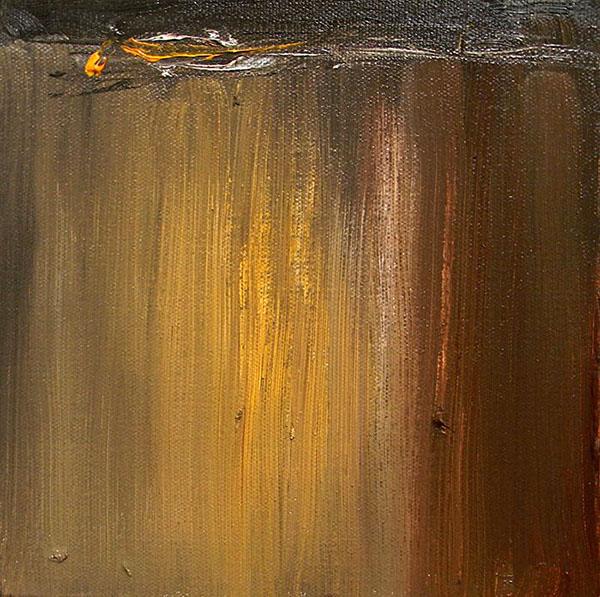

Екатерина Трубицина

Часть I
Прогулка по висячему мостику
Книга 3
Точка выбора
(главы 33-52)
Глава 45
Правила выбора убеждений
Из гостиной слышались старательно, но почти безрезультатно приглушаемые голоса. Едва констатировав это, Ира вскочила с постели и бегом спустилась по лестнице.
- Лешка!
- Мамулик!
Мать и сын бросились друг другу в объятья, а затем на кухню помогать Владу и Татьяне Николаевне готовить праздничный завтрак. Татьяна Николаевна обрадовалась Лешкиному приезду, пожалуй, не меньше самой Иры. Они еще в прошлое лето по-настоящему сдружились и теперь, между «как долетел» и «как повзрослел», активно обсуждали садово-огородные проблемы. Было что! Ира своим участком не занималась, а у Татьяны Николаевны руки не доходили, так что теперь он выглядел точно так же, как и в прошлое лето, когда Ира с Лешкой здесь только поселились, то есть, одичавшим напрочь.
Татьяна Николаевна осталась на торжественный завтрак, и уговаривать ее вовсе не пришлось, достаточным оказалось одного Лешкиного слова. А сам завтрак и все остальное время до отъезда Влада к Радному превратилось в радостно-хаотичный сумбур, а может быть, в сумбурно-радостный хаос.

художник: Оливер Лавдей (США)
*«Downstream»* (фрагмент)
Как только Влад уехал, Лешка вместе с Татьяной Николаевной отправились в заросший сад. Ира присоединилась к ним.
- Влад говорил, что ты около дома, над которым весь этот год работала, настоящий парк сделала, а тут что? – упрекнул Лешка мать, взирая на плотные заросли сочных сорняков в рост человека.
- Лешка, я там только командовала.
- Ой-ой-ой! Только не надо, мам! Влад сам поразился, насколько хорошо ты со всеми садово-огородными принадлежностями управляешься.
- Леш, уметь делать и желать делать – это не одно и то же.
- Лешенька! – вступилась за Иру Татьяна Николаевна. – Когда ж твоей маме с садом-то управляться? Она весь этот год работала с утра до ночи!
- Да знаю я, знаю! – примирительно воскликнул Лешка. – Вообще-то, даже хорошо, что ты тут все так основательно запустила – будет, чем заняться.
- Вот-вот-вот! – рассмеялась Ира. – А то сразу наезжать на меня!
- - -
Влад вернулся довольно быстро. Ира тут же устремилась ему навстречу, а Лешка с Татьяной Николаевной остались в саду.
- Ну как? – с нетерпением спросила Ира.
- Завтра к девяти утра на работу.
- Вот так, прям сразу?
- Угу… Что делать буду – понятия не имею!
- А Радный, что говорит?
- Радный говорит, что если я чего-то не делал в этой жизни, это вовсе не значит, что я этого не умею.
- Так он, значит, считает, что ты, на самом деле, умеешь?
- По всей видимости, да… – Влад глубоко вздохнул. – Только я его оптимизма не разделяю.
- Влад, расскажи, как все было-то?
- Ну как… зашел я к нему, он на меня глянул и рассмеялся…
- Прямо так и рассмеялся?
- Ага…
- Для Радного, это очень необычно… Продолжай.
- В общем, рассмеялся и говорит, что на эшафот в более приподнятом настроении идут. Сказал, что такое мое настроение ему нравится, так как свидетельствует о том, что к работе я буду относиться очень ответственно, раз изначально понимаю, что руководство – это никакая не награда, не признание и не подарок судьбы. В чем, в чем, а в этом я с ним полностью солидарен. Потом показал мне мой кабинет, от чего мне окончательно поплохело…
- Что, такой ужасный? – со смехом спросила Ира.
- Ой, Ир, единственное, что не *овальный*! В общем, кабинет показал и сказал, что завтра в компьютере на рабочем столе я найду папку со своим именем, а в ней всё, что мне понадобится на первое время, которое продлится до следующего четверга.
- Не поняла?
- Ира, он сегодня вечером улетает, а вернется в следующий четверг.
- Не хило…
- Вот-вот… потом он познакомил меня с секретаршей, точнее, представил меня ей как директора. А затем попрощался, пожелав успехов. Вот и всё…

художник: Олег Березуцкий (Россия)
- Ладно, Влад, не дрейфь! Из всех людей, которых я встречала по жизни, Радный – единственный человек, о котором я могу сказать, что он всегда знает, что делает.
- …и этим кардинально отличается от меня!
- Ну как? – в гостиную влетел Лешка.
Пока Влад пересказывал всю историю своего трудоустройства Лешке, Ира с Татьяной Николаевной наскоро готовили обед. После застолья Влад поехал домой, а Ира, Лешка и Татьяна Николаевна вернулись в сад, где провозились пока не начало смеркаться. Потом втроем посидели за чаем с вареньем и лишь только после того, как Лешка проводил Татьяну Николаевну домой, они, наконец-то, остались одни.
- Что у вас там за семинар намечался? Говорил на неделю-другую, а всего-то на два дня задержался.
- Да народ приехать не смог, а нам что – мы и так в этом уже год, как варимся. Я, правда, не год, а лишь месяца три, но все равно.
- Так что за семинар? По каким-нибудь нанотехнологиям?
- Не-а! Мам! Не поверишь! По вопросам истории и культуры!
- Шутишь! Действительно, зная тебя, поверить сложно.
- У нас в университете очень сильная адыгская община. Я, конечно, не адыг, но когда ребята узнали, что я из Сочи, позвали к себе. Так что, теперь я вроде как почетный адыг. В общем, на досуге занимаюсь историей, мифологией, культурой и бытом кавказских народов.
- Да уж! Стоило уехать учиться за океан, чтоб наконец-то заинтересоваться культурологическими особенностями родного края!
- Мам, стыдно, но ведь лучше поздно, чем никогда? К тому же, я, не без усилий, конечно, но пытаюсь вспоминать то, что ты мне в детстве рассказывала.

что ты мне в детстве рассказывала»
художник: Айдан Угур Унал (Турция)
- - -
Почти две недели Ира провела с Лешкой и Татьяной Николаевной на лоне родного сада. Влад не появлялся. В конце первого своего рабочего дня в новой должности он, правда, позвонил и сообщил, что просто с ног валится, и именно поэтому в подробности вдаваться у него нет ни сил, ни желания. А потом и вовсе звонить перестал. Ира даже представлять не пыталась, как у него там. Знала, что тяжко. Несколько раз забегал Женечка, однако вели они с ним лишь светские беседы. Зив и Лоренц то носились вместе со всеми по саду, то пропадали. Замечала их периодические отлучки лишь Ира. Ежедневная садовая эпопея к вечеру доводила до приятной, но при этом, всепоглощающей усталости, а потому интересоваться успехами Влада и отлучками Зива с Лоренцем Ире не хотелось и не моглось. На счастье Ирины земельные владения хоть и отличались внушительными размерами, границы все ж имели, так что облагораживание придомовой территории, в конце концов, благополучно завершилось.
- Мамуль, а давай в город на гульки махнем! – предложил Лешка, после того как они часам к семи вечера еще раз обошли свои владения, с гордостью взирая на плоды собственных трудов.
- Лешка! Ты у меня какой-то ненормальный!
- Это почему?
- Нормальные молодые люди твоего возраста вечерком на гульки маму с собой не зовут.
- Слушай, я тебя полгода не видел!
- Для нормальных молодых людей твоего возраста, это – не аргумент. Приедут на каникулы, маму в щечку чмокнут и вперед по ночному Сочи навстречу приключениям!
- Мам, это ты у меня ненормальная! Знаешь, скольких я за пояс заткнул, отдаленно вспоминая то, что ты мне рассказывала, а я не слушал?
- Ты считаешь, что это – аргумент?
- Для меня – да. Мне интересно с тобой, хоть я и не разделяю всех твоих взглядов… может быть, только пока… И вообще, ты что, против гулек по вечернему Сочи в компании сына?
- Я? Ничуть!
- Так давай рванем!
Ира улыбнулась, сказала: «Давай!», – и пошла к себе в спальню переодеваться, а Лешка, тем временем, вызвал такси.
Они вышли из машины у цирка и, зигзагами то к морю, то к проспекту, двинулись в сторону Ривьеры, заскакивая по пути то в одну, то в другую кафешку.
По дороге встретили целую кучу знакомых, большинство из которых Ира не видела уже по несколько лет. Поначалу она несказанно радовалась встречам, но давние знакомые все, как один, после радостных приветствий почти тут же начинали ныть, и Ире это вскоре надоело. Уже в районе Театральной она всеми силами старалась завершить общение на радостной ноте нежданной встречи и не вдаваться в подробности того, какие именно хитросплетения обстоятельств портят жизнь конкретным людям.
- Леш, просто не устаю поражаться человеческой тупости! – эмоционально поделилась своими наблюдениями Ира. – Говоришь человеку: поменяй в своей жизни это и это. Так нет! Он прав и готов за это убиться, а то, что в его жизни хрень всякая творится, так то не он, а жизнь виновата, судьба! Видите ли, она, гадина, к нему, к такому всему из себя правому, несправедлива, зараза!
- Мам, по-моему, ты излишне резка в своих суждениях.
- В выражении – может быть. Леш, видишь ли, я считаю, что если ты предпочитаешь держаться своих убеждений – не жалуйся на то, что из-за них происходит, но если тебя не устраивает то, что происходит – меняй убеждения!
- Мам, ну а если убеждения, на самом деле, правильные?
- Леш, не бывает убеждений правильных и ложных. Есть те, которые подходят или не подходят данному человеку. Если ты придерживаешься подходящих тебе убеждений – твоя жизнь складывается благополучно, то есть, ты воспринимаешь ее как благополучную и наслаждаешься ею, даже если окружающие с тобой не согласны. А если убеждения тебе не подходят – ты страдаешь, даже несмотря ни на какие казалось бы блага. Обстоятельства начинают стекаться не так, как тебе бы хотелось. Жизнь изо всех сил кричит человеку: «Не то!!! Не твое!!!», а он упрямо прет и жалуется, жалуется, жалуется.

Есть те,
которые подходят или не подходят данному человеку»
художник: Нина Расина (Россия)
«Яблоки падают в небо»
- Может, ты и права. Мне, мам, сложно судить. Твоими стараниями я никогда по-настоящему не страдал.
- А тебе очень хочется?
- Ну не так чтоб очень, конечно, – усмехнулся Лешка.
- Леш, жизнь на Земле устроена так, что человеку, так или иначе, приходится страдать, но есть страдания вполне положительной направленности, например: муки познания, муки творчества. Хочешь пострадать – окунись туда.
- Да я, вроде как, твоими стараниями только там и плаваю.
- Вот и продолжай в том же духе!
Они неспешно подошли к гостинице «Приморская» и уселись за один из пустующих столиков.

фотограф: Элеонора Терновская
Ира заказала себе грейпфрутовый сок, Лешка – апельсиновый и каждому по мороженому. Вскоре вазочки с мороженым и высокие стаканы с соками стояли на столе. Ира погрузилась в наслаждение ледяными вкусностями, сквозь которое услышала до боли знакомый голос:
- Разрешите к вам присоединиться, – сказал Радный где-то в поднебесье.
Ира и глаз поднять не успела, как Лешка радостно завопил:
- Присаживайтесь!
- Спасибо, – поблагодарил Радный и сел. – Ира, Вам этого сока и мороженого явно не хватит, – заметил он, подозвал официантку, заказал еще мороженое и грейпфрутовый сок Ире, еще мороженое и апельсиновый сок Лешке и грейпфрутовый сок себе. – Как учеба, Алексей?
Судя по подробностям, с какими Лешка стал отвечать на вопрос, Радный знал о его учебных делах гораздо больше, нежели Ира. Правда, Лешке, на этот раз, не удалось завершить свой отчет. Его приметила группка молодежи и, с извинениями внедрив в свои ряды, уволокла общаться на скамейку в сквере.
- У меня такое чувство, что вы хотите о чем-то спросить, – Радный вопросительно посмотрел на Иру.
- Да. Хочу.
- Так спрашивайте!
- Зачем рядом со мной Влад?
Радный усмехнулся:
- Я вот тоже хочу это выяснить, – он бросил на Иру выразительный взгляд. – А знать это может только он сам и, может быть, Вы.
Ира опешила, а Радный, выдержав паузу, продолжил.
- С самых первых Ваших более-менее успешных воплощений здесь, он приходит вслед за Вами и как бы притягивается к Вам. Вы неизменно оказываетесь рядом с ним. А когда в прошлые разы Вы покидали этот мир, он сразу вслед за вами уходил. Естественно, что сейчас ни он, ни Вы не сможете объяснить, почему.
Я немного в курсе относительно того, кто сейчас доживает свой век в Канаде. Он наблюдает за Вами издали по просьбе существа, о котором я Вам говорил. Вы явно для меня просили о помощи того, чью книгу намедни готовили к изданию. Он, чтоб не маяться от скуки, позвал с собой нашего с Вами общего знакомого, который подкинул Вам столь заинтересовавший Вас мебельный проект. А вот какое отношение имеет к Вам Влад, я без понятия. Не думаю, что на определенном уровне без понятия Вы, хотя и такое может случиться.
Главная загвоздка в том, что на сей раз он, против обыкновения, сильно задержался с рождением – обычно он отставал не более чем на два-три года – и на данный момент, Влад слишком молод для того чтобы требовать от него адекватного осознания себя.
- Мне кажется, он готов к этому.
- Вам только кажется. Всякие там способности, видения – это все чепуха. Это ни о чем не говорит. Да, Ваш путь здесь в Вашем человеческом осознании по-настоящему начался именно с этого, и потому Вам оно и кажется какими-то признаками, но это не так.
- Стас, у меня такое ощущение, что Вы адекватно осознавали себя чуть ли ни с самого рождения.
- У Вас правильное ощущение, но я – совсем другое дело. Я здесь у себя дома и прекрасно знаю все закоулочки и тайники. Я даже тело сам себе не просто трансформирую к рождению, а формирую сознательно. Такое тело, которое практически полностью послушно мне и не восстает при каждом удобном случае. Ведь мозг – это, всего-навсего, часть тела. А как ощущается восстание тела, я думаю, Вам хорошо известно: изматывающие, вымучивающие состояния, сомнения, проверка себя на вменяемость. Знакомо?
- Да. Как говорится, не успеваю соскучиться.
- Вот-вот. Многие замечают некоторую странность моего облика, которую не могут выразить словами. Я научился делать себе тело без защитных барьеров. Видите ли, изменять свою настройку и шастать по всяким там астралам, – Радный усмехнулся, – можно практически без вреда для тела в любой период жизни. А вот перестать быть человеком и при этом остаться в человеческом теле, то есть, не умереть, не покинуть сей мир, доступно лишь в довольно зрелом возрасте.

можно в любой период жизни.
А вот перестать быть человеком
и при этом остаться в человеческом теле,
то есть, не умереть…»
художник: Арлетт Ганьон (Канада)
Тело попросту начинает стареть, защитные функции притупляются, барьеры истончаются. В юном же возрасте, в случае даже незначительного посягательства на систему безопасности, тут же включается механизм самоуничтожения. Так что, Влада проще пристрелить, чем пытаться заставлять вспомнить, что он рядом с Вами забыл. А вот Вы уже можете попытаться, хотя сомневаюсь, что Вам удастся добиться успеха в ближайшее время.
Вернулся Лешка. Радный с интересом дослушал его прерванный отчет об учебе, который Лешка закончил вопросом:
- Как там Влад?
- Влад? – Радный усмехнулся, и Ира поняла, чему именно. – Влад узнал и продолжает узнавать о себе много нового, открывать новые стороны самого себя. Думаю, совсем скоро, когда он свыкнется с тем, что с моей подачи ему пришлось обнаружить в себе, и с чем он уже совершенно освоился, ты сам, да и твоя мама тоже, сможете убедиться, что и вы знали его далеко не со всех сторон.
- Так у него все получается? – Лешка искренне радовался за друга.
- Куда ж он денется! – Радный тепло улыбнулся и несколько раз перевел взгляд с Лешки на Иру и обратно, затем глубоко вздохнул. – К сожалению, мне пора вас покинуть. До свидания! Удачи!
Радный под прощальные реплики Иры и Лешки встал и удалился.
- Ма, во здорово! – воскликнул Лешка, как только Радный окончательно пропал из поля зрения, и принялся высказывать о Владе все, что он о нем думал раньше и стал думать теперь.
Ира с полуулыбкой слушала его, почти не слыша. Мысли в ее мозгу кипели, бурлили и взрывались. Когда ей о чем-то, выходящем за пределы общепринятого понимания реальности, говорил Женечка, Ира принимала это так – по большей части, все же так – как отвлеченные рассуждения о вещах абстрактных. Когда ей о той же сфере говорил Радный, это воспринималось, как нечто очень конкретное и само собой разумеющееся. Но только пока он говорил, пока он находился рядом. Стоило же Ире остаться наедине с собой, как все человеческое в ней поднимало настоящий бунт. После разговора в поющем доме, Ире каким-то фантастическим образом, практически не прикладывая усилий, удалось проигнорировать разногласия реального и ирреального в себе, и готовый разразиться бой не на жизнь, а на смерть так и не грянул. Зато теперь реальное с ирреальным принялись рвать ее на части, требуя, в конце концов, принять чью-то сторону. Они вроде как перестали драться между собой и накинулись на нее: «Сделай выбор! Определись! Сделай выбор! Определись!», – вопили они.
Ира безвольно следовала за сыном дальше по вечернему городу, машинально поддерживая разговор. Время снова перестало существовать для нее, и сколько его прошло, прежде чем Лешка предложил вернуться домой, Ира не знала.
фотограф: Элеонора Терновская
Вернувшись, они выпили чаю с оставленным Татьяной Николаевной яблочным пирогом и отправились спать. Поворочавшись в постели и поняв, что истошные требования выбора уснуть ей не дадут, Ира спустилась в гостиную.
- - -
Зив и Лоренц выжидающе смотрели на Иру, и ее прорвало. Она в диком сумбуре выложила им все, что ее терзало.
- Что ты собираешься делать? – спокойно спросил Зив, когда вырвавшийся из Иры эмоциональный словесный поток иссяк.
Иру охватило странное ощущение. Она как бы чувствовала каждую клеточку своего тела в отдельности, каждый своей орган в отдельности и все тело в целом, как некий инструмент. Как кисть, которой она, держа в руке, водит по холсту, как компьютерную мышь, создающую под действием ее руки изображение на мониторе. Как нечто, на время становящееся как бы ею самой, но на самом деле, ею не являющееся. Она ощущала вибрации, проходящие через каждую клеточку, каждый орган и через все тело в целом.
- Что ты собираешься делать? – спокойно повторил свой вопрос Зив.
- Я НЕ СОБИРАЮСЬ что-либо делать… – в странном умиротворении проговорила Ира.

художник: Кушлани Джаясинха (США)
*«Through the Lights»*
- Мудрое решение, – промурлыкал Лоренц.
- - -
На следующий день Ира проспала почти до полудня и, поднявшись, обнаружила себя в гордом одиночестве. Она вооружилась бумагой, кистями и красками и, усевшись в тени собственного сада, принялась рисовать с натуры пейзаж, который оказался перед глазами.
Лешка, в компании Зива и Лоренца, вернулся домой лишь часам к восьми вечера и принялся взахлеб делиться впечатлениями от прогулки, а потом вместе с Татьяной Николаевной с не меньшим восторгом рассматривать Ирины наброски.
- Лешка, а поехали завтра в *Головинку*! – предложила Ира, когда Татьяна Николаевна ушла к себе домой.
- А что мы будем там делать? – спросил Лешка.
- Леш! Ты меня удивляешь! Ведь сам говорил, что по уши увяз в культуре адыгов!
- И что?
- Как что!? Неужто не в курсе!? Головинка – одно из культовых мест этого народа, притом с глубокой древности.
- Правда?
- Правда… – с укоризненным вздохом ответила Ира. – Так что, едем?
- Ну поехали, раз так… – Лешке стало несколько неловко. Он сосредоточился, напрягая память. – Ты мне, по-моему, действительно что-то когда-то об этом рассказывала.
- Было дело, господин Неслушавший и Непомнящий!
- Мам, мне на самом деле стыдно… – виновато улыбнулся Лешка.